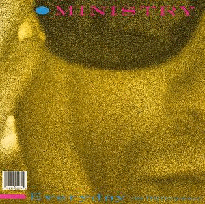

NOTE: This site is non-indexed, so you can only view this site if you've been given the URL.
TRACK OF THE WEEK!
Every Monday, I choose a new track or song and present it as the "Track Of The Week". Almost like a recommendation, if you will.
Week 1 (October 5th 2026)
"(Every Day is) Halloween" by Ministry

Release Date: 1984
Genre: Synth Pop & Industrial
archliver - 2026